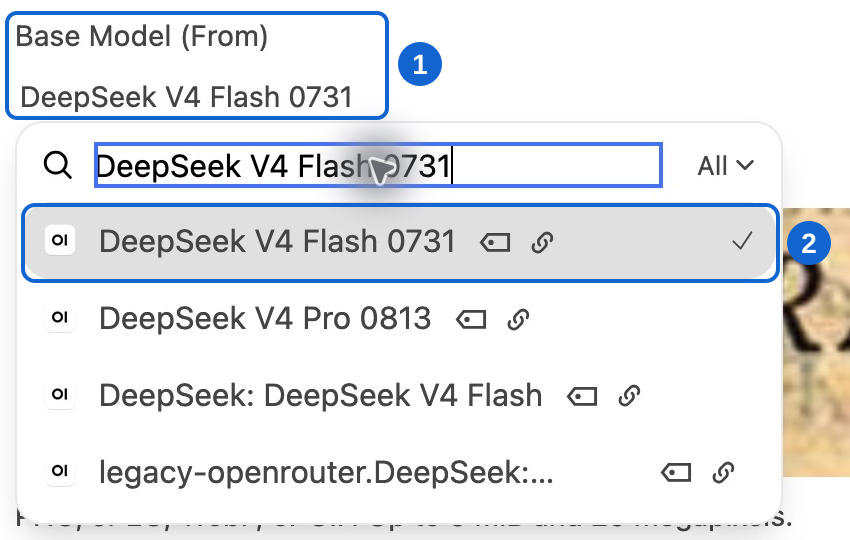
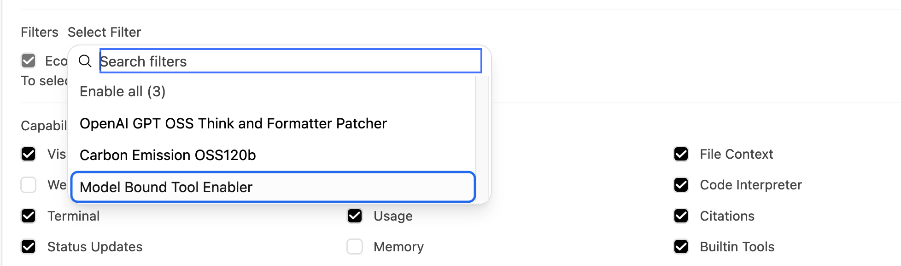
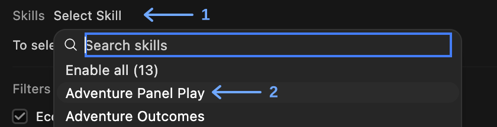
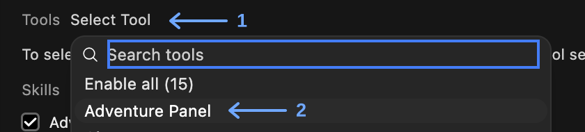
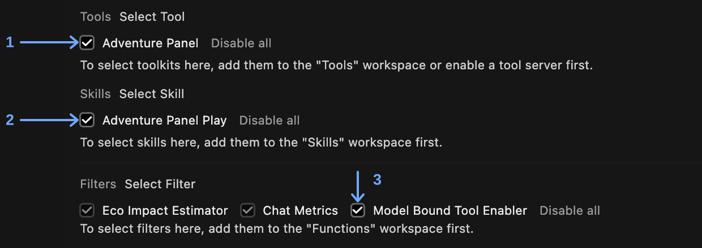
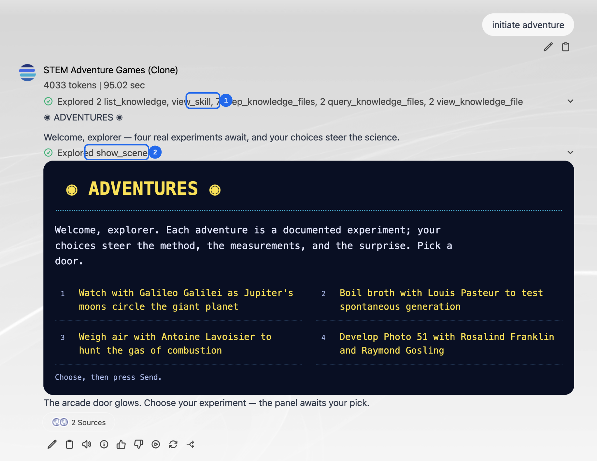
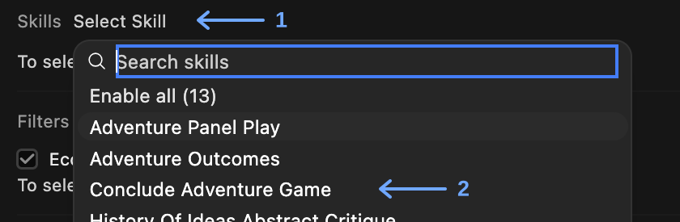
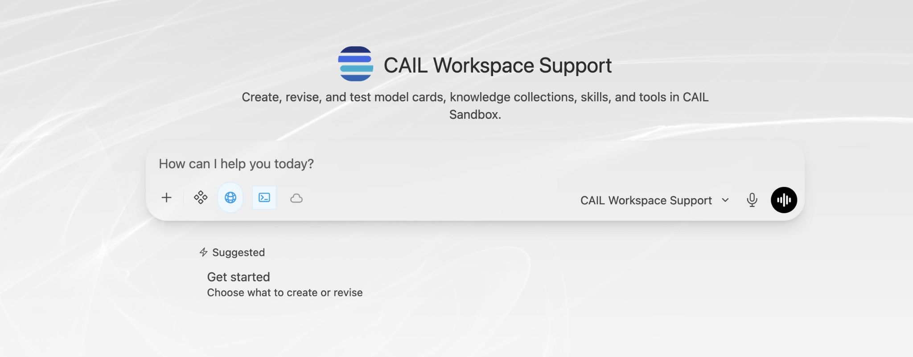
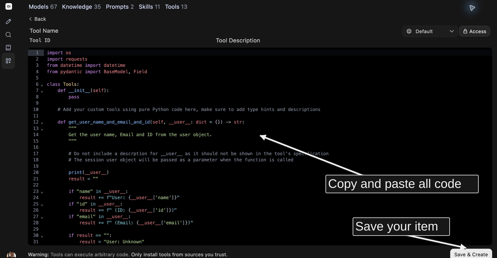

Configuring skills and tools

Alt text: CUNY AI Lab
New Media Lab · Room 7388.01
CUNY Graduate Center
Developed by Zach Muhlbauer
Choose Your Own Adventure
- Continue your saved model, or clone STEM Adventure Games in Workspace → Models → ⋯ → Clone
- Open Workspace → Models → Edit and review your system prompt’s setting, goals, and rules
- Keep your model card open to add a skill and a tool

Alt text: Workspace Models filtered to STEM Adventure Games, with annotations identifying Workspace in left sidebar and Clone for original model
What Is a Skill?
What Is a Tool?
Update Model for Tool Calling

Alt text: Model card base-model picker — 1 identifies Base Model; 2 identifies DeepSeek V4 Flash 0731
Enable Filter
Enable Model Bound Tool Enabler on your model card, which binds assigned tools to the model’s operations.

Alt text: Model card filter picker with Model Bound Tool Enabler outlined
Add Your Skill
- Open Workspace → Models → Edit → Skills → Select Skill
- Choose Adventure Panel Play and read its saved instructions
- Keep your model card open to add Adventure Panel

Alt text: Skills picker with arrow 1 at Select Skill and arrow 2 at Adventure Panel Play.
Add the ‘Adventure Panel’ tool
- Open Tools → Select Tool on the same model card
- Choose Adventure Panel and keep Adventure Panel Play selected
- Add the system-prompt instructions on slide 10, then select Save & Update

Alt text: Tools picker with arrow 1 at Select Tool and arrow 2 at Adventure Panel.
Model Card Check-In
Confirm these selections on your model card
- Adventure Panel tool
- Adventure Panel Play skill
- Model Bound Tool Enabler filter
Keep your knowledge collection attached

Alt text: Model card with numbered arrows identifying the checked Adventure Panel tool, Adventure Panel Play skill, and Model Bound Tool Enabler filter.
Add Skill Instructions to the Bottom of Your System Prompt
Test Your Adventure
Observe Game Results
- Check the Adventure Panel Play skill call
- Check the Adventure Panel tool call
Open call details to confirm the skill and show_scene function

Alt text: User-provided live Clone response with numbered callouts for view_skill and show_scene above rendered ADVENTURES panel
Explore Other Skills
- Read Adventure Outcomes or Conclude Adventure Game after your first adventure works
- Change one skill and save your model card
- Run your adventure again and compare results

Alt text: Skills picker showing Adventure Panel Play, Adventure Outcomes, and Conclude Adventure Game, with arrows at Select Skill and Conclude Adventure Game.
Choose Your Task
Work With Support
Prompt CAIL Workspace Support to generate a skill and/or tool that continues to support or further extends your adventure game, adapting an existing skill/tool or making your own.

Alt text: Fresh live CAIL Workspace Support interface with model identity, description, composer, and Get started suggestion
Adapt Your Adventure
Add Tools or Skills
- Copy and paste all code for tools or plain text for skills, then save your item
- On your model card, select your new tool or skill, and signpost it in your system prompt

Alt text: Tools Create form with code editor, Access and Save & Create visible; arrows identify relevant steps without changing interface pixels
CUNY AI Lab | Coworking Sessions
CUNY AI Lab | Coworking Sessions➳
Bring your Sandbox projects into coworking sessions and extend them through vibe coding.